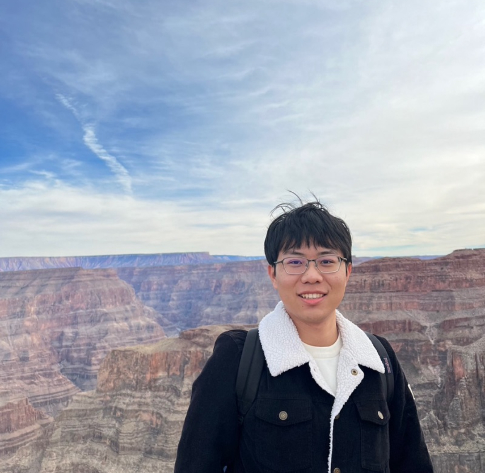

Matrix completion and missing data
I study inverse-probability-weighted estimators for low-rank matrix completion when some entries are more likely to be observed than others.
Statistics Ph.D. student · The Ohio State University
I study matrix completion when entries have different probabilities of being observed. I also work on Bayesian state-space models for digital twin systems.

I study inverse-probability-weighted estimators for low-rank matrix completion when some entries are more likely to be observed than others.
My work on digital twins uses Bayesian state-space models, with a focus on real-time estimation, uncertainty quantification, and robustness.
I evaluate how predictive models perform and where they fail in financial, text, and large-language-model applications.
—Present
Graduate Researcher · Department of Statistics
Research on matrix completion under non-uniform missingness and Bayesian state-space methods for digital twin systems.
—
Research Assistant
Large-scale text and sentiment analysis, alongside evaluations of GPT-3.5 and GPT-4 on actuarial exam-style problems.
—
Co-op Data Science Intern
Statistical modeling and anomaly detection for transaction-monitoring data.
—
Co-op Data Science Intern
Python machine-learning models for customer credit-risk prediction.
2024—Present
Ph.D. Student in Statistics
May 2024
M.S. in Statistics
January 2022
B.S. in Applied Mathematics
For questions about my work or possible collaborations, email me at: